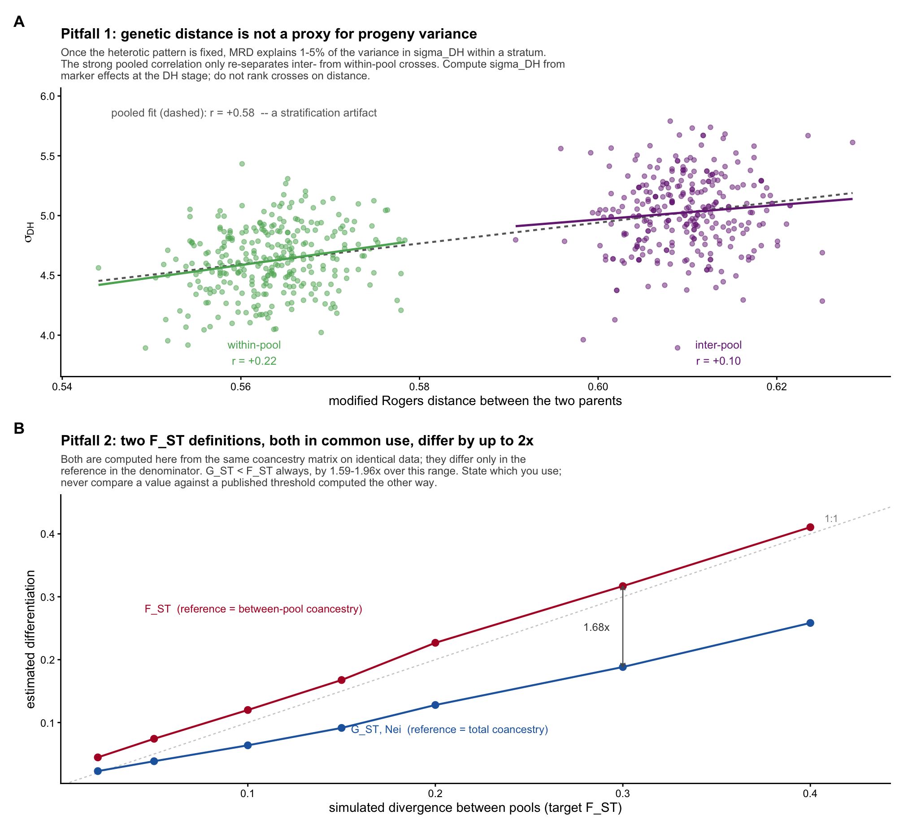
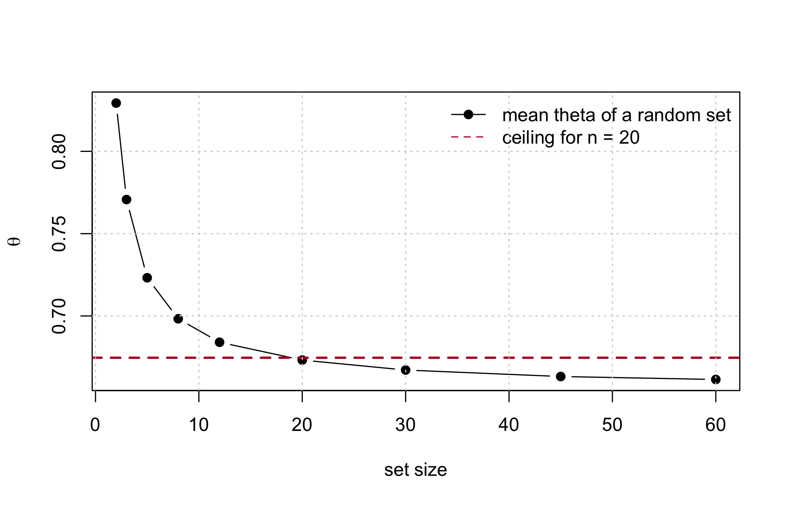
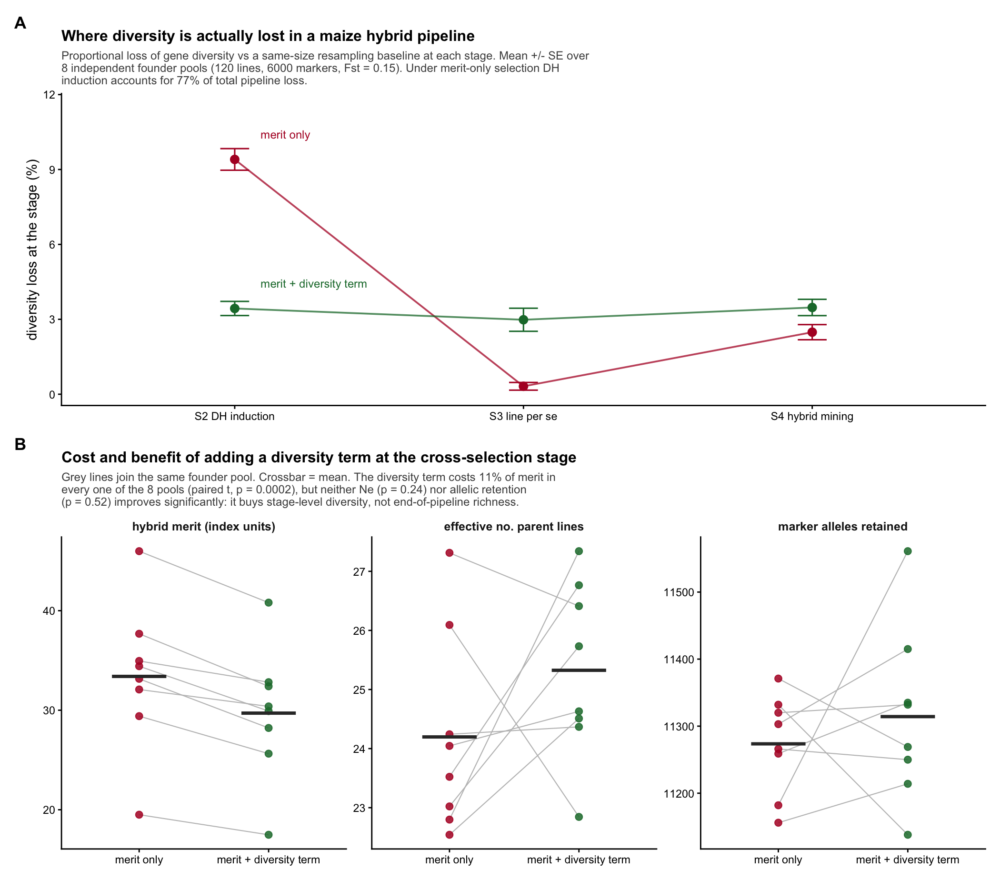

sim <- simulate_pools(n_A = 30, n_B = 30, m = 3000, fst = 0.15, seed = 12)
ctx <- ctx_from_pools(sim)
GL <- sim$GL; pool <- sim$pool; fL <- sim$fL
c(lines = sim$L, markers = sim$m, hybrids = sim$N)
#> lines markers hybrids
#> 60 3000 9009 Metrics at each pipeline stage, and five traps
The previous chapters established which metrics to use. This one places them at the four stages of a hybrid maize programme, and names five traps – each one a thing that looks correct, returns a number, and is wrong.
| Stage | What is selected |
|---|---|
| S1 | conserving the heterotic groups (pool level) |
| S2 | choosing parents and crosses for DH induction |
| S3 | selecting lines per se |
| S4 | hybrid mining |
Two rules govern everything below. Every formula was verified numerically before it was written; where a result is an exact algebraic identity, the maximum deviation from simulation is reported next to it. And the metric set is the one established in Chapter 8: molecular coancestry as the kernel, \(GD = 1 - \theta\) as the scale, \(N_s\) as the interpretable size, allelic richness as the one non-redundant addition, and proportional loss measured against a same-size resampling baseline.
9.1 The kernel: one matrix, all four stages
Molecular coancestry \(f_{ij}\) is the probability that an allele drawn at random from individual \(i\) is identical in state to one drawn from \(j\). For inbred lines coded 0/1 at \(m\) biallelic markers,
\[f_{ij} \;=\; 1 - \frac{1}{m}\sum_{k=1}^{m}(x_{ik} - x_{jk})^2 .\]
Group coancestry of a set is the mean of the full submatrix including the diagonal, \(\theta = n^{-2}\sum_i\sum_j f_{ij}\), with \(GD = 1 - \theta\) and \(N_s = 1/(2\theta)\).
The diagonal is not a technicality. It is why a small set always looks highly coancestral, and it is the reason the naive greedy constraint in S3 fails.
9.1.1 Trap 1: modified Rogers distance is the same statistic
Reporting both MRD and coancestry as separate evidence is reporting one number twice. The relation is exact:
D <- mrd_matrix(GL)
c(max_deviation = max(abs(coancestry_from_mrd(D) - fL)))
#> max_deviation
#> 1.110223e-16\(f_{ij} = 1 - \text{MRD}_{ij}^2\). If a diversity report shows a distance tree and a coancestry table as mutual corroboration, they are the same analysis in two coordinate systems.
9.2 S1: conserving the heterotic groups
Diversity in a hybrid programme is two quantities moving in opposite directions: within-pool diversity erodes under selection, while between-pool divergence inflates. A single pool-wide statistic cannot express both, and a programme monitoring only total diversity can look stable while both pools collapse internally and drift apart.
The partition is exact for any grouping:
\[\theta_T = \sum_p w_p^2\,\theta_{pp} \;+\; \sum \text{over } p \ne q \text{ of } w_p w_q\,\theta_{pq}\]
d <- theta_decompose(GL, pool)
c(theta_T_from_partition = d$theta_T,
theta_T_direct = mean(fL),
deviation = d$theta_T - mean(fL))
#> theta_T_from_partition theta_T_direct deviation
#> 0.6614378 0.6614378 0.00000009.2.1 Trap 2: two \(F_{ST}\) definitions differ by up to 2x
Both are in routine use, both are computed from the same coancestry matrix, and they are not interchangeable:
\[F_{ST}^{(W)} = \frac{\theta_w - \theta_B}{1 - \theta_B} \qquad\qquad G_{ST} = \frac{\theta_w - \theta_T}{1 - \theta_T}\]
The first references between-pool coancestry; the second references total pooled-frequency coancestry and equals Nei’s \(G_{ST} = (H_T - H_S)/H_T\):
c(Fst_Wright = d$Fst_Wright,
Gst_Nei = d$Gst_Nei,
Gst_classical = unname(gst_nei(GL, pool)[["Gst"]]),
ratio = d$Fst_Wright / d$Gst_Nei)
#> Fst_Wright Gst_Nei Gst_classical ratio
#> 0.1824006 0.1003525 0.1003525 1.8175994Because \(\theta_T > \theta_B\) whenever the pools differ at all, \(G_{ST} < F_{ST}\) always. Across simulated divergence they never converge:
| fst_target | Fst_Wright | Gst_Nei | ratio | theta_B | theta_T | GD_within | frac_opp | mean_dp |
|---|---|---|---|---|---|---|---|---|
| 0.02 | 0.0446 | 0.0228 | 1.9554 | 0.6372 | 0.6453 | 0.3466 | 0.0000 | 0.0991 |
| 0.05 | 0.0742 | 0.0385 | 1.9258 | 0.6361 | 0.6496 | 0.3369 | 0.0000 | 0.1280 |
| 0.10 | 0.1200 | 0.0638 | 1.8800 | 0.6367 | 0.6585 | 0.3197 | 0.0000 | 0.1607 |
| 0.15 | 0.1676 | 0.0915 | 1.8324 | 0.6337 | 0.6644 | 0.3049 | 0.0003 | 0.1907 |
| 0.20 | 0.2268 | 0.1279 | 1.7732 | 0.6289 | 0.6710 | 0.2869 | 0.0013 | 0.2211 |
| 0.30 | 0.3170 | 0.1883 | 1.6830 | 0.6413 | 0.6982 | 0.2450 | 0.0063 | 0.2504 |
| 0.40 | 0.4106 | 0.2584 | 1.5894 | 0.6341 | 0.7092 | 0.2157 | 0.0230 | 0.2840 |
State which definition you used, and never compare your value against a published threshold computed the other way.
9.2.2 Trap 3: \(F_{ST}\) is the wrong target to maximise
\(F_{ST}\) keeps rising as pools drift apart at loci that are already divergent, which buys no additional heterosis. Under a dominance model, the quantity that generates heterosis is the fraction of loci fixed for opposite alleles in the two pools – and the two decouple:
sweep_fst <- do.call(rbind, lapply(c(0.05, 0.15, 0.25, 0.40), function(fst) {
s <- simulate_pools(n_A = 25, n_B = 25, m = 2000, fst = fst, seed = 3)
dd <- theta_decompose(s$GL, s$pool)
cm <- pool_complementarity(s$GL, s$pool)
data.frame(target_fst = fst, Fst = dd$Fst_Wright, GD_within = dd$GD_within,
frac_opposite_fixed = cm[["frac_opposite_fixed"]],
mean_abs_delta_p = cm[["mean_abs_delta_p"]])
}))
fmt(sweep_fst, 4)| target_fst | Fst | GD_within | frac_opposite_fixed | mean_abs_delta_p |
|---|---|---|---|---|
| 0.05 | 0.0907 | 0.3321 | 0.0005 | 0.1412 |
| 0.15 | 0.1857 | 0.3003 | 0.0000 | 0.1995 |
| 0.25 | 0.2711 | 0.2644 | 0.0045 | 0.2379 |
| 0.40 | 0.4348 | 0.2106 | 0.0370 | 0.2940 |
Buying oppositely-fixed loci costs within-pool gene diversity, and it costs a great deal of it. Hold \(F_{ST}\) in a band, not at a maximum, and monitor complementarity directly.
9.2.3 The S1 monitoring panel
fmt(s1_monitor(GL, pool, cycle = 12), 4)| cycle | GD_within | GD_total | Fst_Wright | Gst_Nei | Ns_total | GD_A | GD_B | frac_opposite_fixed | mean_abs_delta_p |
|---|---|---|---|---|---|---|---|---|---|
| 12 | 0.3046 | 0.3386 | 0.1824 | 0.1004 | 0.7559 | 0.305 | 0.3042 | 0 | 0.2003 |
Log this every cycle and plot it as a time series. Defend GD_within per pool; watch frac_opposite_fixed for heterosis potential; treat \(F_{ST}\) as a descriptor, not an objective.
The empirical anchor is Kadoumi et al. (2025), who tracked diversity erosion and heterotic-group divergence over decades of a commercial European dent maize programme – and found exactly the two opposite trends this panel is built to separate. See Chapter 13.
9.3 S2: choosing crosses for DH induction
This is where the largest share of pipeline diversity is lost, and also where the cheapest exact algebra is available.
9.3.1 Three verified identities
For a DH family from cross \((i,j)\) of two inbreds, each locus is inherited from \(i\) or \(j\) with probability 1/2 and then doubled.
(a) Coancestry between two DH sibs of the same family: \(\mathbb{E}[f] = (1 + f_{ij})/2\).
(b) Coancestry between a DH of family \((i,j)\) and one of \((k,l)\): \(\mathbb{E}[f] = (f_{ik} + f_{il} + f_{jk} + f_{jl})/4\).
(c) Group coancestry of a DH pool from crosses \(c = 1 \dots C\), each contributing \(n_c\) lines, \(D = \sum n_c\):
\[\theta_{pool} = \mathbf{w}^{\top}\mathbf{f}^L\mathbf{w} \;+\; \frac{1}{D}\left(1 - \overline{\left(\tfrac{1 + f_c}{2}\right)}\right)\]
with \(\mathbf{w}\) the parent-usage weight vector. The second term is the self-coancestry correction; it is \(O(1/D)\) and worth keeping.
set.seed(88)
A <- 1:30
crosses <- cbind(sample(A, 20, replace = TRUE), sample(A, 20, replace = TRUE))
crosses <- crosses[crosses[, 1] != crosses[, 2], , drop = FALSE]
c(with_self_term = dh_pool_theta(crosses, n_per = 40, fL, self_term = TRUE),
without_self_term = dh_pool_theta(crosses, n_per = 40, fL, self_term = FALSE),
sib_coancestry_ex = dh_sib_coancestry(fL[crosses[1, 1], crosses[1, 2]]))
#> with_self_term without_self_term sib_coancestry_ex
#> 0.7010910 0.7008837 0.8493333
ImportantThe key structural result of S2
The diversity of the DH pool is a quadratic form in which parents you use and how often. The DH lines never need to be genotyped – or to exist – for their pool diversity to be optimised. You can evaluate a crossing plan before making a single cross.
9.3.2 Progeny variance, and the usefulness criterion
Under an additive model only loci segregating in the cross contribute:
\[\sigma^2_{DH(i,j)} = \frac{1}{4}\sum_{k \,:\, x_{ik} \ne x_{jk}} \beta_k^2\]
sig <- sigma_dh_crosses(crosses, GL, sim$beta)
mu <- rowMeans(cbind(GL[crosses[, 1], ] %*% sim$beta,
GL[crosses[, 2], ] %*% sim$beta))
uc <- usefulness_criterion(mu, sig, i = sel_intensity(0.05), h = 0.6)
c(sel_intensity_5pct = sel_intensity(0.05), textbook = 2.063)
#> sel_intensity_5pct textbook
#> 2.062713 2.063000
fmt(head(data.frame(p1 = crosses[, 1], p2 = crosses[, 2],
mu = mu, sigma_dh = sig, UC = uc), 6), 3)| p1 | p2 | mu | sigma_dh | UC |
|---|---|---|---|---|
| 23 | 27 | 0.930 | 4.609 | 6.634 |
| 13 | 11 | -5.977 | 5.032 | 0.251 |
| 22 | 21 | -3.481 | 5.264 | 3.034 |
| 7 | 19 | -7.343 | 5.063 | -1.076 |
| 19 | 1 | -11.512 | 5.285 | -4.971 |
| 2 | 12 | -2.152 | 4.934 | 3.955 |
sel_intensity(0.05) returns 2.0627 against the textbook 2.063.
9.3.3 Trap 4: genetic distance is not a proxy for progeny variance
It is common practice to rank crosses by marker distance, on the argument that more distant parents segregate for more loci. Once the heterotic pattern is fixed, this fails:
| stratum | cor | R2 |
|---|---|---|
| inter-pool (A x B) | 0.103 | 0.011 |
| within-pool (A x A) | 0.219 | 0.048 |
| pooled | 0.576 | 0.332 |

A raw count of segregating loci explains the same variance – distance is adding nothing beyond “are these parents in different pools”, which you already know.
Rank crosses on sigma_dh_crosses() computed from marker effects, not on distance.
9.4 S3: selecting lines per se
Two points of practice.
Apply the constraint within each pool separately. A pooled constraint can be satisfied by keeping the pools apart while both erode internally – exactly the failure mode S1 exists to prevent.
Measure loss against a same-size resampling baseline.
merit <- as.vector(GL %*% sim$beta)
merit <- (merit - mean(merit)) / sd(merit)
top <- order(merit, decreasing = TRUE)[1:20]
fmt(loss_vs_resampling(top, fL, B = 300), 4)
#> GD_selected GD_random_mean loss_pct percentile
#> 0.3245 0.3271 0.8029 0.07009.4.1 Trap 5: the incremental greedy constraint silently returns nothing
The natural implementation – “add the next-best line while \(\theta\) stays below the ceiling” – cannot work, and fails silently by returning an empty set. Group coancestry includes the diagonal, so a single line has \(\theta = 1\) and any pair has \(\theta = (1 + f_{ij})/2\). A ceiling calibrated on a large pool is unreachable at small set sizes; the greedy never gets past the first candidate.
ceiling20 <- theta_ceiling(fL, n_sel = 20, alpha = 0.005)
c(ceiling = ceiling20,
theta_single_line = fL[1, 1],
theta_best_pair = min((1 + fL[upper.tri(fL)]) / 2),
any_pair_admissible = any((1 + fL[upper.tri(fL)]) / 2 <= ceiling20))
#> ceiling theta_single_line theta_best_pair any_pair_admissible
#> 0.6746394 1.0000000 0.8008333 0.0000000No single line and no pair can satisfy the ceiling. \(\theta\) falls monotonically as the set grows, so the constraint is only meaningful at the target size:
sizes <- c(2, 3, 5, 8, 12, 20, 30, 45, 60)
th <- vapply(sizes, function(n) mean(replicate(50, {
s <- sample.int(nrow(fL), n); mean(fL[s, s])})), numeric(1))
plot(sizes, th, type = "b", pch = 19, xlab = "set size", ylab = expression(theta))
abline(h = ceiling20, col = "#b2182b", lty = 2, lwd = 2)
legend("topright", c("mean theta of a random set", "ceiling for n = 20"),
col = c("black", "#b2182b"), lty = c(1, 2), pch = c(19, NA), bty = "n")
grid()
The working route is truncate-then-repair: take the top n_sel by merit, then swap the most-related member for the least-related non-member until the ceiling is met, breaking ties on merit.
sel <- select_lines_constrained(merit, fL, n_sel = 20, theta_max = ceiling20)
c(n_selected = length(sel),
theta = s3_theta(sel, fL),
ceiling = ceiling20,
met = s3_theta(sel, fL) <= ceiling20,
mean_merit = mean(merit[sel]),
merit_of_top = mean(merit[top]))
#> n_selected theta ceiling met mean_merit merit_of_top
#> 20.0000000 0.6755400 0.6746394 0.0000000 1.0724564 1.0724564theta_ceiling() expresses the ceiling as a permitted proportional loss against the same-size baseline, so the constraint means the same thing at every set size.
9.5 S4: hybrid mining
With \(\mathbf{u}\) the line-usage count vector over the \(n\) selected hybrids,
\[\theta_{hyb} = \frac{\mathbf{u}^{\top}\mathbf{f}^L\,\mathbf{u}}{(2n)^2}\]
set.seed(91)
hyb <- sample.int(ctx$N, 100)
u <- line_usage(hyb, ctx$parents, ctx$n_lines)
c(theta_from_usage = hybrid_theta_from_usage(u, fL),
theta_from_matrix = ref_theta(hyb, ctx),
deviation = hybrid_theta_from_usage(u, fL) - ref_theta(hyb, ctx))
#> theta_from_usage theta_from_matrix deviation
#> 0.6620848 0.6620848 0.0000000Deviation exactly zero. This is the collapse of Section 8.1: cost drops from \(O(n^2)\) over an \(N \times N\) hybrid matrix to \(O(L^2)\) with no hybrid matrix formed at all.
Expected heterozygosity of the hybrid set needs no separate computation: for hybrids of fixed lines it is exactly \(1 - \theta_{hyb}\).
c(theta = hybrid_theta_from_usage(u, fL),
He = 1 - hybrid_theta_from_usage(u, fL),
Ne = ne_parents_from_counts(u),
pool_balance = pool_balance(hyb, ctx$parents, pool))
#> theta He Ne pool_balance1 pool_balance2
#> 0.6620848 0.3379152 49.6277916 0.5000000 0.50000009.6 Where the diversity actually goes
The four stages were simulated end to end over 8 independent founder pools (120 lines, 6000 markers, target \(F_{ST} = 0.15\); 20 crosses, 40 DH each, 80 lines selected, 200 hybrids mined), under two cross-selection strategies: merit only, and merit plus a diversity term on parental coancestry.
Loss at each stage is proportional loss of gene diversity against that stage’s own same-size resampling baseline, so the stages sit on one scale.
| stage | loss_pct.UC + div | share_of_total.UC + div | loss_pct.UC only | share_of_total.UC only |
|---|---|---|---|---|
| S2 DH induction | 3.43 | 35.51 | 9.40 | 77.46 |
| S3 line per se | 2.98 | 28.99 | 0.32 | 2.55 |
| S4 hybrid mining | 3.47 | 35.49 | 2.48 | 19.99 |

DH induction dominates. Under merit-only cross selection it accounts for 77% of all diversity lost in the pipeline – more than three times the loss at hybrid mining, which is where optimisation effort conventionally goes.
The reason is structural: 20 crosses out of 1770 possible within-pool combinations is a far harsher bottleneck than 200 hybrids out of 1600, and the S2 collapse makes it the cheapest stage to constrain.
9.6.1 What the diversity term buys, and what it does not
| Outcome | merit only | merit + diversity | paired t (n = 8) |
|---|---|---|---|
| hybrid merit | 33.4 | 29.71 | p = 0.0002 |
| effective no. parent lines | 24.2 | 25.33 | p = 0.24 |
| marker alleles retained | 11274.0 | 11314.00 | p = 0.52 |
The merit cost is 11%, consistent in all 8 pools. Neither end-of-pipeline diversity outcome improves significantly. The diversity term redistributes loss across stages – it flattens the S2 spike – but with downstream selection still running on merit alone, the pipeline reconverges. Diversity spent at S2 is partly reclaimed at S3 and S4.
A diversity constraint applied at one stage buys stage-level diversity, not end-of-pipeline richness. If allelic richness in the commercial hybrid set is the target, the constraint has to be carried through all four stages, and the loss ledger is the instrument for allocating a budget across them.
9.7 Cost summary
| Stage | Function | Cost | Notes |
|---|---|---|---|
| S1 | theta_decompose |
O(L^2) once per cycle | monitoring, not an inner loop |
| S2 | dh_pool_theta |
O(L^2) per plan | no DH genotypes needed |
| S2 | sigma_dh_crosses |
O(C m) | the real cost at this stage |
| S3 | select_lines_constrained |
O(swaps x n) | swaps typically under 20 |
| S4 | hybrid_theta_from_usage |
O(L^2) per evaluation | no N x N matrix |
The \(O(L^2)\) quadratic form is the recurring shape. With \(L\) in the hundreds it is microseconds, which is why the whole pipeline can be optimised inside a metaheuristic. The dominant cost anywhere here is sigma_dh_crosses at S2, because it touches the marker matrix – cache it per candidate cross rather than recomputing inside the optimiser loop.
9.8 Checklist
- Compute the coancestry matrix once per cycle; never report modified Rogers distance alongside it as separate evidence.
- Monitor within-pool
GDper pool, not pooledGD; state which \(F_{ST}\) definition you use; hold it in a band. - Rank crosses on \(\sigma_{DH}\) from marker effects, never on parental distance.
- Evaluate the crossing plan’s \(\theta_{pool}\) before making the crosses – it is a quadratic form in parent usage.
- Calibrate every diversity ceiling against a same-size resampling baseline, and apply it at the target set size.
- Constrain within pool, at every stage – a single-stage constraint does not survive to the hybrid set.
- At S4, use the line-usage collapse; the hybrid coancestry matrix is never needed.
- Keep the per-stage loss ledger. It is the only way to see that DH induction, not hybrid mining, is where the diversity goes.